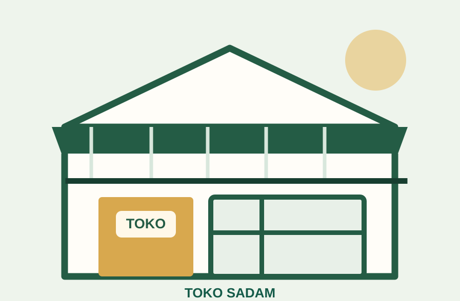

TOKO KELONTONG • DESA SARANG MANDI
Belanja kebutuhan harian jadi lebih mudah.
Toko Sadam menyediakan berbagai kebutuhan pokok dan perlengkapan sehari-hari dengan harga terjangkau serta pelayanan yang ramah.
Melayani masyarakat sejak tahun 2024.

PILIHAN TOKO
Kebutuhan pokok untuk sehari-hari
Beberapa produk yang tersedia di Toko Sadam.


MENGENAL TOKO SADAM
Belanja dekat, kebutuhan lebih mudah dijangkau.
Toko Sadam hadir untuk memenuhi kebutuhan sehari-hari masyarakat sekitar Desa Sarang Mandi.